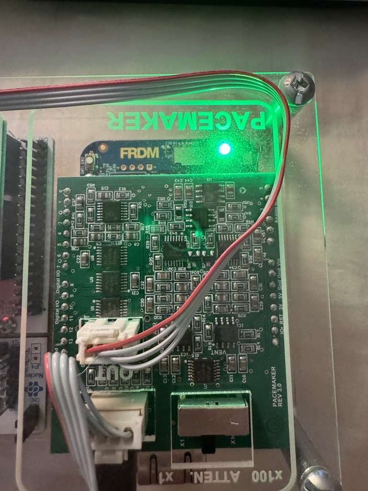
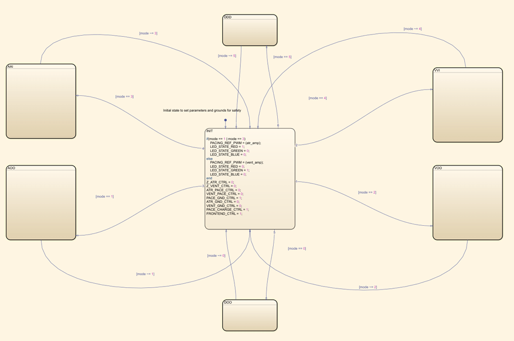
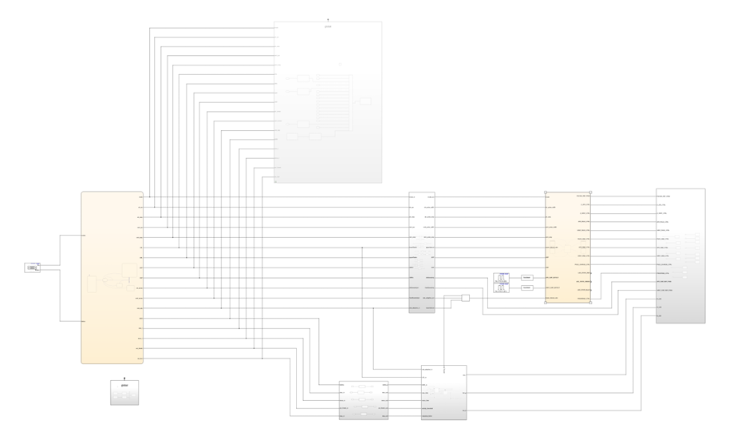
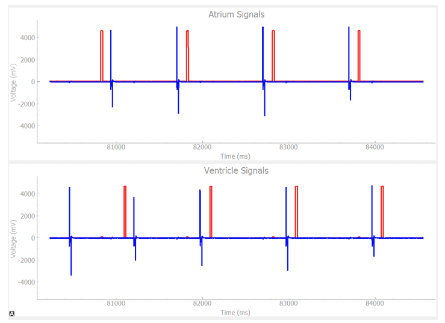
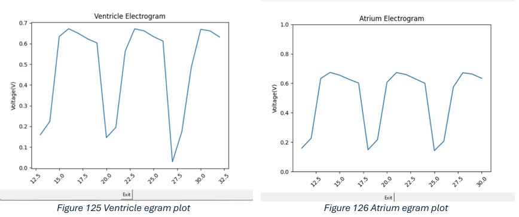
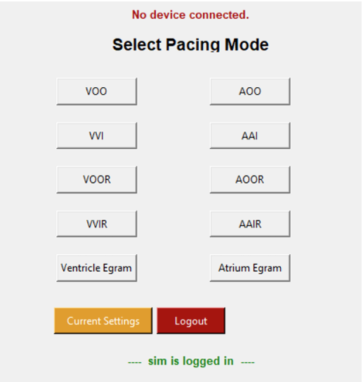
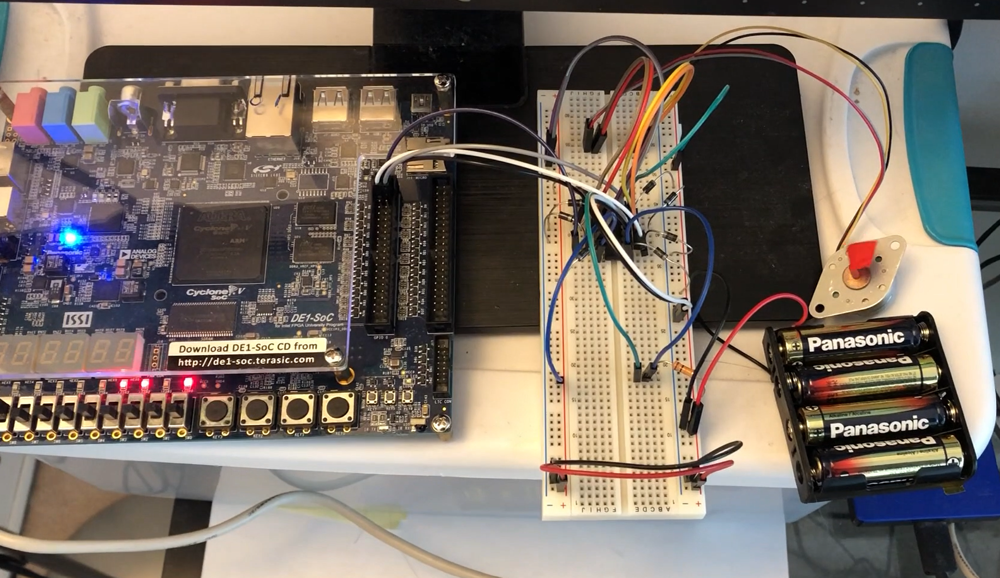

Software Development, FPGA - VHDL
Year 3
This year I learned about control systems, embedded systems, signals & systems, scientific computation, thermodynamics, operating systems and more

Pacemaker
This project consisted of creating the software for a pacemaker using Matlab Simulink. The pacmaker is able to pace both the atrial and ventricle chambers with a rate adaptive mode that changes its pacing based on the physical activity of the user. An app was created in Python to control the pacing modes, as well as viewing the electrograms of both atrial and ventricle chambers.





FPGA - Verilog
This year I also learned how to program an FPGA using Verilog. In these labs I had the chance to create various programs like an FIR filter to block out certain frequencies, or a stepper motor controller
